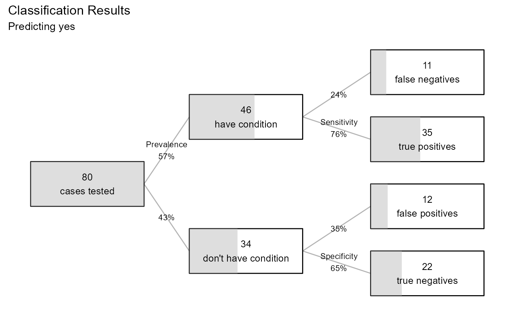

logistic.RmdThis short vignette demonstrates many of the functions in the qacReg package. In this analysis, we’ll develop a model for predicting births by caesarian from patient characteristics uing the caesarian data frame.
Model fitting is normally an iterative process. We’ll skip this to keep things simple.
info(fit)
#> LOGISTIC REGRESSION SUMMARY
#> Formula: caesarian ~ .
#> Data : caesarian
#> N : 80
#>
#> Predicted category: yes
#>
#> Omnibus Test
#> Chi-square(7) = 24.5557, p = 0.0009094 ***
#>
#> Fit Measures
#> Stukel's GOF Test: Chi-square(2) = 2.7587, p < 0.2517
#> Tjur's Psuedo-R.squared: 0.2715
#> AIC: 100.541
#>
#> Anova Table (type III tests)
#> LR Chisq DF Pr(>Chisq)
#> age 0.1874 1 0.665107
#> delivery.num 2.6039 1 0.106598
#> delivery.time 6.3377 2 0.042052 *
#> bp 10.9374 2 0.004217 **
#> heart.problem 5.6196 1 0.017761 *
#>
#> Logistic Regression Coefficients
#> B SE z Pr(>|z|)
#> (Intercept) 1.43912 1.60133 0.8987 0.368811
#> age -0.02534 0.05883 -0.4307 0.666678
#> delivery.num 0.64139 0.41054 1.5623 0.118218
#> delivery.timepremature -1.06162 0.73059 -1.4531 0.146193
#> delivery.timelatecomer -1.70004 0.74871 -2.2706 0.023170 *
#> bpnormal -2.25423 0.79667 -2.8296 0.004661 **
#> bphigh -0.65859 0.80363 -0.8195 0.412491
#> heart.probleminept 1.37590 0.60431 2.2768 0.022797 *
#>
#> Odds Ratios (with 95% Confidence Intervals)
#> Odds Ratio 2.5% 97.5%
#> age 0.9750 0.86430 1.0930
#> delivery.num 1.8991 0.87428 4.4808
#> delivery.timepremature 0.3459 0.07670 1.4076
#> delivery.timelatecomer 0.1827 0.03786 0.7431
#> bpnormal 0.1050 0.01919 0.4536
#> bphigh 0.5176 0.10116 2.4749
#> heart.probleminept 3.9586 1.26252 13.9405
diagnostics(fit)
relimp(fit)
#> working ...
performance(fit)
#> LOGISTIC REGRESSION PERFORMANCE
#> Data : caesarian
#> N : 80
#> Response variable : caesarian
#> Category Balance : no (0.42%) yes (0.58%)
#> Predicted category: yes
#> Prob to classify : >=0.5
#>
#> Model: glm(caesarian ~ .,
#> family = binomial, data = caesarian)
#>
#> Confusion Matrix
#>
#> Actual
#> Predicted no yes
#> no 22 11
#> yes 12 35
#>
#> Overall Statistics
#>
#> Accuracy: 0.7125
#> 97% CI : (0.6005, 0.8082)
#> No Information Rate: 0.575
#> P-Value [Acc > NIR]: 0.007869
#>
#> Statistics by Category
#>
#> Sensitivity 0.7609
#> Specificity 0.6471
#> Pos Pred Value 0.7447
#> Neg Pred Value 0.6667
#> F1 0.7527
#> ---
#> Note: recall = sensitivity,
#> precision = pos pred value.